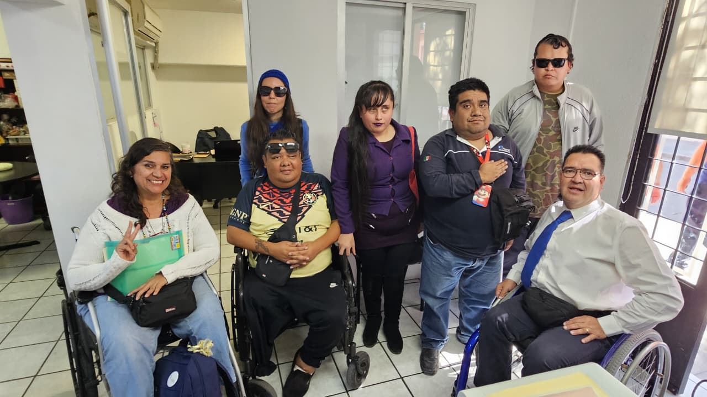

Nosotros
Nahui Ollin es un movimiento que promueve la inclusión, la autonomía y el ejercicio pleno de derechos de las personas con discapacidad.

Nahui Ollin surge como parte del Centro de Vida Independiente México, impulsando acciones orientadas a visibilizar las discapacidades y fortalecer la vida independiente.
Promover la autonomía personal, el acceso a empleo digno, la participación social y la construcción de una sociedad inclusiva.
Generamos espacios de participación, sensibilización y desarrollo para personas con discapacidad motriz, visual, auditiva y cognitiva.